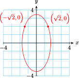

Section 10.3 Central Conics
We know that the graph of any first-degree equation in two variables,
is a line, as long as \(A\) and \(B\) are not both \(0\text{.}\) We now consider second-degree equations in two variables. The most general form of such an equation is
where \(A, B\text{,}\) and \(C\) cannot all be zero (because in that case the equation would not be second degree).
The graphs of such equations are curves called conic sections because they are formed by the intersection of a plane and a cone, as shown below. Except for a few special cases called degenerate conics, which we will describe later, the conic sections fall into four categories called circles, ellipses, hyperbolas, and parabolas.
Subsection Circles and Ellipses
In this section we will consider conic sections whose centers (or vertices, in the case of parabolas) are located at the origin. Such curves are called central conics.
The circle is the most familiar of the conic sections. We can use the distance formula to derive the standard equation for a circle of radius \(r\) centered at the point \((h,k)\text{:}\)
A circle whose center is the origin thus has equation
We can also write this equation in the form
Note 10.19.
The denominator of the \(x\)-squared term is the square of the \(x\)-intercepts,and the denominator of the \(y\)-squared term is the square of the \(y\)-intercepts. (Do you see why?) Of course, in this case the \(x\)- and \(y\)-intercepts are equal because the graph is a circle.
If the denominators of the \(x\)-squared and \(y\)-squared terms are different (but positive), the graph is called an ellipse. For example, the graph of
is shown below.
When \(y=0\text{,}\) we have \(\dfrac{x^2}{9} = 1\text{,}\) so the \(x\)-intercepts are \((3,0)\) and \((-3,0)\text{.}\) When \(x=0\text{,}\) we have \(\dfrac{y^2}{4} = 1\text{,}\) so the \(y\)-intercepts are \((0,2)\) and \((0,-2)\text{.}\)
In general, we define an ellipse as follows.
Ellipse.
An ellipse is the set of points in the plane the sum of whose distances from two fixed points (called the foci) is a constant.
We can visualize the definition in the following way. Drive two nails into a board to represent the two foci. Attach the two ends of a piece of string to the two nails, and stretch the string taut with a pencil. Trace around the two nails, keeping the string taut, as illustrated below. Because the sum of the distances from each point to the two foci is the length of the string, which is constant, the figure described will be an ellipse.
Ellipses appear in a variety of applications. The orbits of the planets about the sun and of satellites about the earth are ellipses. The arches in some bridges are elliptical in shape, and whispering domes, such as the ceiling of the Mormon Tabernacle in Salt Lake City, are made from ellipses.
Using the distance formula and the definition above, we can show that the equation of an ellipse centered at the origin has the following form.
Standard Equation for an Ellipse.
From this equation, we discover several features of the graph.
- By setting \(y\) equal to zero in this equation, we find that the \(x\)-intercepts of this ellipse are \(a\) and \(-a\text{;}\) by setting \(x\) equal to zero, we find that the \(y\)-intercepts are \(b\) and \(-b\text{.}\)
- The line segment that passes through the foci and ends on the ellipse is called the major axis. When \(a \gt b\text{,}\) the foci lie on the \(x\)-axis, as shown at left below.
- The \(x\)-intercepts are the endpoints of the major axis, so its length is \(2a\text{.}\)
- The vertical segment with length \(2b\) is called the minor axis.
- The endpoints of the major axis are called the vertices of the ellipse, and the endpoints of the minor axis are the covertices.

When \(a \lt b\text{,}\) the foci are on the \(y\)-axis, as shown at right above. So the \(y\)-intercepts of the ellipse are the endpoints of the major axis, which then has length \(2b\text{.}\) In this case the minor axis is horizontal and has length \(2a\text{.}\)
The standard form of the equation for an ellipse gives us enough information to sketch its graph.
Example 10.20.
Graph \(~~\dfrac{x^2}{8} + \dfrac{y^2}{25} = 1\)
The graph is an ellipse with major axis on the \(y\)-axis. Because \(a^2=8\) and \(b^2=25\text{,}\) the vertices are located at \((0,5)\) and \((0,-5)\text{,}\) and the covertices lie \(\sqrt{8} = 2\sqrt{2}\) units to the right and left of the center, or at approximately \((2.8,0)\) and \((-2.8,0)\text{.}\)
| \(x\) | \(y\) |
| \(0\) | \(\pm 5\) |
| \(\pm 2\sqrt{2}\) | \(0\) |
To sketch the ellipse, we first locate the vertices and covertices, then draw a smooth curve through the points.

Notebook 10.21. Practice 1.
The equation of any central ellipse may be written as
where \(A, B\) and \(C\) have the same sign. The features of the graph are easier to identify if we first convert the equation to standard form.
Example 10.22.
Graph \(~~4x^2 + y^2 = 12\)
To convert the equation to standard form, we divide through by the constant term, 12, and obtain
Because \(a^2=3\) and \(b^2=12\text{,}\) the vertices are \((0, \pm\sqrt{12})=(0, \pm2\sqrt{3})\) and the covertices are \((\pm\sqrt{3}, 0)\text{.}\)
| \(x\) | \(y\) |
| \(0\) | \(\pm 2\sqrt{3}\) |
| \(\pm \sqrt{3}\) | \(0\) |
We plot points at approximately \((0, \pm 3.4)\) and \((\pm 1.7, 0)\text{,}\) then draw a central ellipse through the points.

Notebook 10.23. Practice 2.

We can find coordinates of other points on an ellipse by substituting a value for one variable and solving for the other variable.
Example 10.24.
Find the exact coordinates of any points with \(y\)-coordinate 2 on the ellipse \(4x^2 + y^2 = 12\text{.}\) Plot and label those points on the ellipse.
Solve the equation \(4x^2 + y^2 = 12\) when \(y = -4\text{.}\) What do the solutions tell you about the graph of the ellipse?
-
We substitute \(y = \alert{2}\) into the equation and solve for \(x\text{.}\)
\begin{align*} 4x^2+(\alert{2})^2\amp = 12\\ 4x^2\amp = 8\\ x^2\amp = 2\\ x\amp= \pm \sqrt{2} \end{align*}There are two points with \(y=2\text{,}\) namely \(\left(\sqrt{2},2\right) \) and \(\left(-\sqrt{2},2\right) \)
-
We substitute \(y = \alert{-4}\) into the equation and solve for \(x\text{.}\)
\begin{align*} 4x^2+(\alert{-4})^2\amp = 12\\ 4x^2\amp = -4\\ x^2\amp = -1 \end{align*}Because there are no real solutions, there are no points on the ellipse with \(= -4\text{.}\)
Notebook 10.25. Practice 3.
Subsection Hyperbolas
If a cone is cut by a plane parallel to its axis, the intersection is a hyperbola, the only conic section made of two separate pieces, or branches. Hyperbolas occur in a number of applied settings. The navigational system called LORAN (long-range navigation) uses radio signals to locate a ship or plane at the intersection of two hyperbolas. Satellites moving with sufficient speed will follow an orbit that is branch of a hyperbola; for example, a rocket sent to the moon must be fitted with retrorockets to reduce its speed in order to achieve an elliptical, rather than hyperbolic, orbit about the moon.
The hyperbola is defined as follows.
Hyperbola.
A hyperbola is the set of points in the plane, the difference of whose distances from two fixed points (the foci) is a constant.
If the origin is the center of the hyperbola and the foci lie on the \(x\)-axis, we can show that its equation may be written as follows.
Standard Equation for a Hyperbola.
A hyperbola with this equation has the following features:
- The two branches of the hyperbola open left and right, so the graph has \(x\)-intercepts at \(a\) and \(-a\text{,}\) but no \(y\)-intercepts, as shown below.
- The segment joining the \(x\)-intercepts is the transverse axis, and its length is \(2a\text{.}\)
- The segment of length \(2b\) is called the conjugate axis.
- The endpoints of the transverse axis are the vertices of the hyperbola.
A hyperbola centered at the origin with foci on the \(y\)-axis has the following equation.
Standard Equation for a Hyperbola.
In this case the graph has \(y\)-intercepts at \(b\) and \(-b\text{,}\) but no \(x\)-intercepts, because the two branches open up and down. Here the \(y\)-intercepts are the vertices, so the transverse axis is vertical and has length \(2b\text{.}\) The conjugate axis has length \(2a\text{.}\) A typical example is shown below.
Subsection Asymptotes of Hyperbolas
The branches of the hyperbola approach two straight lines that intersect at its center. These lines are asymptotes of the graph, and they are useful as guidelines for sketching the hyperbola. We can draw the asymptotes by first forming the "central rectangle," whose sides pass through the vertices and covertices. The asymptotes are the diagonals of this rectangle.
Example 10.26.
Graph \(\dfrac{y^2}{9} - \dfrac{x^2}{4} = 1\)
The graph is a hyperbola with center at the origin. The branches of the hyperbola open upward and downward, so the vertices lie on the \(y\)-axis. Also, \(a^2=4\) and \(b^2=9\text{,}\) so \(a=2\) and \(b=3\text{.}\) The vertices of the hyperbola are \((0,3)\) and \((0,-3)\text{.}\) There are no \(x\)-intercepts.
We construct the central rectangle with dimensions \(2a=4\) and \(2b=6\text{,}\) as shown below. Then we draw the asymptotes through the diagonals of the rectangle. (Note that the asymptotes have slopes \(\pm \dfrac{3}{2}\text{.}\)) Finally, we sketch the branches of the hyperbola through the vertices and approaching the asymptotes to obtain the graph shown.
Notebook 10.27. Practice 1.

Note 10.28.
In the examples above, note that the slopes of the asymptotes are \(\pm \dfrac{b}{a}\text{.}\)
The equation of a central hyperbola may be written as
where \(A\) and \(B\) have opposite signs and \(C \not= 0\text{.}\) For example,
are equations of hyperbolas. As with ellipses, it is best to rewrite the equation in standard form in order to graph it.
Example 10.29.
Write the equation \(4y^2-x^2=16\) in standard form and describe the important features of its graph.
We first divide each side by 16 to obtain
The graph is a central hyperbola with \(y\)-intercepts \(2\) and \(-2\text{,}\) as shown in the figure. The slopes of the asymptotes are given by
so the equations of the asymptotes are

Notebook 10.30. Practice 2.
We can find exact coordinates of points on a hyperbola by substituting a value for one variable and solving for the other variable.
Example 10.31.
Find the exact coordinates of any points with \(x\)-coordinate \(x=2\) on the hyperbola with equation \(4x^2-y^2=16\text{.}\) Plot and label those points on the hyperbola.
We substitute in the given equation.
There are two points with \(x=2\text{,}\) namely \(\left(2, \sqrt{5}\right)\) and \(\left(2, -\sqrt{5}\right)\text{,}\) as shown in the figure.
Notebook 10.32. Practice 3.
Subsection Parabolas
If a cone is cut by a plane parallel to the side of the cone, the intersection is a parabola. We have already graphed parabolas whose equations were of the form
These parabolas opened either up or down and had vertical axes of symmetry. However, it is also possible to have parabolas that open to the left or right. In general, we define a parabola as follows.
Parabola.
A parabola is the set of points in the plane whose distances from a fixed line \(l\) and a fixed point \(F\) are equal.
The fixed line in the definition is called the directrix, and the fixed point is the focus. The axis of a parabola is the line running through the focus of the parabola and perpendicular to the directrix.
Parabolas have many applications in optics and communications. Parabolic mirrors are used in telescopes because light waves received reflect off the surface and form an image at the focus of the parabola. For similar reasons radio antennae and television dish receivers are parabolic in shape. The parabolic mirrors in searchlights and automobile headlights reflect light from the focus into beams of parallel rays.
We first consider parabolas with vertex at the origin, as shown below.
Using the distance formula and the definition above, it can be shown that parabolas that open upward and those that open downward have equations of the forms
respectively, where \(p\) is the distance between the vertex of the parabola and its focus,or the distance between the vertex and the directrix.
Parabolas that open to the right and those that open to the left have equations of the forms
respectively.
A line drawn through the focus and parallel to the directrix will intersect the parabola at two points. These points are \(2p\) units from the directrix, so they must also be \(2p\) units from the focus. (Recall that by definition the points of a parabola are equidistant from the focus and the directrix.)
By locating these two "guide points" and the vertex, we can make a reasonable sketch of the parabola, as illustrated in the next example.
Example 10.33.
Graph \(~~x = \dfrac{-y^2}{6}~~\)
The parabola has its vertex at the origin and opens to the left, so its axis is the \(x\)-axis. Also, \(6=4p\text{,}\) so \(p=\dfrac{3}{2}\text{,}\) and the focus is the point \((-\dfrac{3}{2}, 0)\text{.}\) The directrix is the vertical line \(x=\dfrac{3}{2}\)
.To graph the parabola, we draw a line segment of length \(4p=6\) perpendicular to the axis and centered at the focus. Because \(2p=3\text{,}\) the endpoints of the segment are \((-\dfrac{3}{2}, 3)\) and \((-\dfrac{3}{2}, -3)\text{.}\) We sketch the parabola through the vertex and the two guide points to obtain the graph shown below.
Notebook 10.34. Practice 4.
Example 10.35.
Write each equation in standard form and describe its graph.
- \(\displaystyle x^2=9y^2-9\)
- \(\displaystyle 4x^2+y=0\)
- \(\displaystyle 9y^2=4-x^2\)
- \(\displaystyle 6x^2=18-6y^2\)
- The equation \(x^2=9y^2-9\) is equivalent to\begin{equation*} 9y^2-x^2=9 ~~~~~~ \text{or} ~~~~~~ \dfrac{y^2}{1^2} - \dfrac{x^2}{3^2}=1 \end{equation*}The graph is a hyperbola opening up and down.
- The equation \(4x^2+y=0\) is equivalent to\begin{equation*} y=-4x^2 ~~~~~~ \text{or} ~~~~~~ y= \dfrac{-x^2}{\dfrac{1}{4}} \end{equation*}The graph is a parabola that opens downward.
- The equation \(9y^2=4-x^2\) is equivalent to\begin{equation*} x^2+9y^2=4 ~~~~~~ \text{or} ~~~~~~ \dfrac{x^2}{(2)^2} + \dfrac{y^2}{(\dfrac{2}{3})^2}=1 \end{equation*}The graph is an ellipse with major axis on the \(x\)-axis because \(2 \gt \dfrac{2}{3}\text{.}\)
- The equation \(6x^2=18-6y^2\) is equivalent to\begin{equation*} 6x^2+6y^2=18 ~~~~~~ \text{or} ~~~~~~ x^2 + y^2 = (\sqrt{3})^2 \end{equation*}The graph is a circle with radius \(\sqrt{3}\text{.}\)
Notebook 10.36. Practice 5.
Subsection Section Summary
Subsubsection Vocabulary
Look up the definitions of new terms in the Glossary.
- Ellipse
- Hyperbola
- Central conic
- Focus
- Major axis
- Minor axis
- Vertex
- Covertex
- Transverse axis
- Conjugate axis
- Asymptote
- Directrix
Subsubsection CONCEPTS
- The most general form of a second-degree equation in two variables is\begin{equation*} Ax^2 + Bxy + Cy^2 + Dx + Ey + F = 0 \end{equation*}where \(A, B\text{,}\) and \(C\) cannot all be zero, and its graph is a conic section.
- An ellipse is the set of points in the plane the sum of whose distances from two fixed points (called the foci) is a constant.
- The standard form for an ellipse centered at the origin is\begin{equation*} \dfrac{x^2}{a^2} + \dfrac{y^2}{b^2} = 1 \end{equation*}
- A hyperbola is the set of points in the plane, the difference of whose distances from two fixed points (the foci) is a constant.
- The standard form for a hyperbola centered at the origin with foci on the \(x\)-axis is\begin{equation*} \dfrac{x^2}{a^2} - \dfrac{y^2}{b^2} = 1 \end{equation*}The standard form for a hyperbola centered at the origin with foci on the \(y\)-axis is\begin{equation*} \dfrac{y^2}{b^2} - \dfrac{x^2}{a^2} = 1 \end{equation*}
- We can draw the asymptotes by first forming the "central rectangle," whose sides pass through the vertices and covertices. The asymptotes are the diagonals of this rectangle.
- A parabola is the set of points in the plane whose distances from a fixed line \(l\) and a fixed point \(F\) are equal.
- Parabolas with vertex at the origin have equations of the form\begin{equation*} y=\dfrac{x^2}{4p} ~~~~~~ \text{or} ~~~~~~ y=\dfrac{-x^2}{4p} ~~~~~~ \text{or} ~~~~~~ x=\dfrac{y^2}{4p} ~~~~~~ \text{and} ~~~~~~ x=\dfrac{-y^2}{4p} \end{equation*}
Subsubsection STUDY QUESTIONS
- Name four types of conic sections. Why are they called conic sections?
- Define the following terms related to ellipses: major and minor axes, vertices and covertices.
- What is the standard form for the equation of an ellipse?
- Define the following terms related to hyperbolas: transverse and conjugate axes, vertices, asymptotes.
- What is the standard form for the equation of a hyperbola?
- What are the directrix and focus of a parabola?
Subsubsection SKILLS
Practice each skill in the Homework problems listed.
Graph circles, ellipses, hyperbolas, and parabolas: #1–28
Find points on the graph with a given coordinate: #29–40
Find an equation for a conic section: #41–44
Find and use an equation for a conic section in an applied situation: #45–56
Exercises Homework 10.3
For Problems 1–10, graph the circle or ellipse.
1.
\(4x^2=16-4y^2\)
2.
\(2x^2=18-2y^2\)
3.
\(\dfrac{x^2}{16}+\dfrac{y^2}{4}=1\)
4.
\(\dfrac{x^2}{9}+\dfrac{y^2}{16}=1\)
5.
\(\dfrac{x^2}{10}+\dfrac{y^2}{25}=1\)
6.
\(3x^2+4y^2=36\)
7.
\(x^2 + \dfrac{y^2}{14}=1\)
8.
\(x^2=36-9y^2\)
9.
\(3y^2=30-2x^2\)
10.
\(5y^2=30-3x^2\)
For Problems 11–18, graph the hyperbola.
11.
\(\dfrac{x^2}{25}-\dfrac{y^2}{9} = 1\)
12.
\(\dfrac{y^2}{4}-\dfrac{x^2}{16} = 1\)
13.
\(\dfrac{y^2}{12}-\dfrac{y^2}{8} = 1\)
14.
\(y^2-9x^2=36\)
15.
\(9x^2-4y^2=36\)
16.
\(3x^2=4y^2+24\)
17.
\(\dfrac{1}{2}x^2=y^2-12\)
18.
\(y^2=\dfrac{1}{2}x^2-16\)
For Problems 19–26, graph the parabola.
19.
\(x^2=2y\)
20.
\(y^2=4x\)
21.
\(x=\dfrac{-1}{16}y\)
22.
\(y^2=12x\)
23.
\(4x^2=3y\)
24.
\(x^2+8y=0\)
24.
\(2y^2-3x=0\)
26.
\(3x^2+5y=0\)
For Problems 27–38, the graphs are circles, ellipses, hyperbolas, or parabolas.
- Name the graph and describe its main features.
- Find the coordinates of all points on the graph with the given \(x\)- or \(y\)-coordinate.
27.
\(y^2=4-x^2,~x=-1\)
28.
\(y^2=6-4x^2,~y=2\)
29.
\(4y^2=x^2-8,~y=2\)
30.
\(x^2+2y-4=0,~y=-3\)
31.
\(4x^2=12-2y^2,~x=4\)
32.
\(6x^2=8-6y^2,~x=\sqrt{2}\)
33.
\(4x^2=6+4y,~y=-2\)
34.
\(2x^2=5+4y^2,~x=-\sqrt{3}\)
35.
\(6+\dfrac{x^2}{4}=y^2,~y=-\sqrt{5}\)
36.
\(y^2=6-\dfrac{2x^2}{3},~y=\sqrt{7}\)
37.
\(\dfrac{1}{2}x^2-y=4,~x=-\sqrt{3}\)
38.
\(\dfrac{x^2}{4}=4+6y^2,~x=\sqrt{17}\)
For Problems 39–42,
- Give an equation for the conic graphed.
- Use your equation to complete the table.
39.
| \(x\) | \(\pm 3\) | \(\hphantom{0000}\) | \(-2\) | \(\hphantom{0000}\) |
| \(y\) | \(\hphantom{0000}\) | \(\pm 2\) | \(\hphantom{0000}\) | \(1\) |
40.
| \(x\) | \(\pm 4\) | \(\hphantom{0000}\) | \(3\) | \(\hphantom{0000}\) |
| \(y\) | \(\hphantom{0000}\) | \(\pm 4\) | \(\hphantom{0000}\) | \(-2\) |
41.
| \(x\) | \(0\) | \(\hphantom{0000}\) | \(4\) | \(\hphantom{0000}\) |
| \(y\) | \(\hphantom{0000}\) | \(0\) | \(\hphantom{0000}\) | \(-2\) |
42.
| \(x\) | \(0\) | \(\hphantom{0000}\) | \(8\) | \(\hphantom{0000}\) |
| \(y\) | \(\hphantom{0000}\) | \(\pm 2\) | \(\hphantom{0000}\) | \(3\) |
43.
The arch of a bridge forms the top half of an ellipse with a horizontal major axis. The arch is 7 feet high and 20 feet wide.
- Find an equation for the ellipse.
- How high is the arch at a distance of 8 feet from the peak?
44.
A doorway is topped by a semi-elliptical arch. The doorway is 230 centimeters high at its highest point and 200 centimeters high at its lowest point. It is 80 centimeters wide.
- Find an equation for the ellipse.
- How high is the doorway 8 centimeters from the left side?

45.
The edge of a sailboat's keel is elliptical in shape, with a major axis of 360 centimeters. The minor axis is 100 centimeters, but part of the ellipse has been cut off parallel to the major axis. This cut edge is 330 centimeters long.
- Find an equation for the ellipse.
- What is the width of the keel at its widest point? Round your answer to two decimal places.
46.
The wing of a World War II British Spitfire is an ellipse whose major axis is 48 feet. The minor axis is 16 feet, but part of the ellipse is cut off parallel to the major axis. This cut edge is 46 feet long.
- Find an equation for the ellipse.
- How wide is the wing at its center? Round your answer to two decimal places.

47.
In a reflecting telescope a parabolic mirror is used to collect light, and the image forms at the focus of the parabola. Suppose you want to build a parabolic mirror that is 72 inches in diameter and 3 inches deep.
- Find an equation for the parabola.
- How far is the focus from the vertex of the parabola?
48.
A sonar dish is parbolic in shape, with the receiver located at the focus of the parabola. The dish is 12 inches wide, and the receiver is 12 inches from the vertex of the parabola.
- Find an equation for the parabola.
- How deep is the dish?
49.
Tien-Ying plans to build a parabolic satellite dish. The dish will have a diameter of 60 centimeters and will be 18 centimeters deep. She must place the receiver at the focus of the parabola.
- Find an equation for the parabola.
- How far is the receiver from the vertex of the parabola?
50.
A flashlight has a parabolic mirror to focus a beam of light. The mirror is 8 centimeters in diameter and 4 centimeters deep.
- Find an equation for the parabola.
- The light bulb must be positioned at the focus of the parabola. How far is the bulb from the vertex of the parabola?
Problems 51–54 deal with the cooling tower at an electricity-generating facility, as shown below. The shape of the tower, called a hyperboloid, is obtained by revolving a portion of the hyperbola \(~\dfrac{x^2}{100^2}-\dfrac{y^2}{150^2}=1~\) around the \(y\)-axis.

51.
The base of the cooling tower is 360 feet below the center of the hyperbola. What is the diameter of the base?
52.
The top of the cooling tower is 200 feet above the center of the hyperbola. What is the diameter of the top?
53.
The diameter of the tower first decreases with height, and then increases again. There are two heights at which the tower's diameter is 250 feet. Find the greater of the two heights.
54.
Find the lower of the two heights at which the tower's diameter is 200 feet.
55.
Graph \(~x^2-y^2=0\text{.}\) (Hint: Factor the left side of the equation and use the zero-factor principle to write two equations, then graph them.) Describe your graph.
56.
Graph \(~4x^2-y^2=0\text{.}\) (Hint: See the hint for Exercise 55.) Describe your graph.
57.
Graph \(~x^2-y^2=4,~~x^2-y^2=1,\) and \(x^2-y^2=0\) on the same set of axes. What do you observe?
58.
Graph \(~4x^2-y^2=16,~~4x^2-y^2=4,\) and \(4x^2-y^2=0\) on the same set of axes. What do you observe?